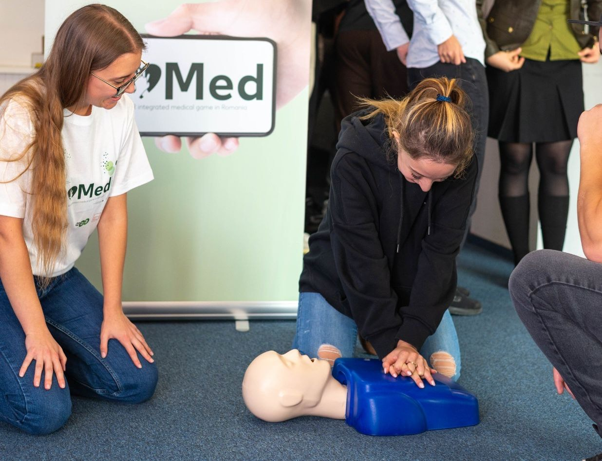
goMed
Aplicație de prim ajutor cu realitate augmentată și analiză în timp real a resuscitării cardiopulmonare (RCP)
Lansare: 4 oct. 2026
Din 2024, desfășurăm proiecte în școli și grădinițe din 10 județe, printre care Iași, Vaslui, Prahova și Ilfov.

Aplicație de prim ajutor cu realitate augmentată și analiză în timp real a resuscitării cardiopulmonare (RCP)
Lansare: 4 oct. 2026
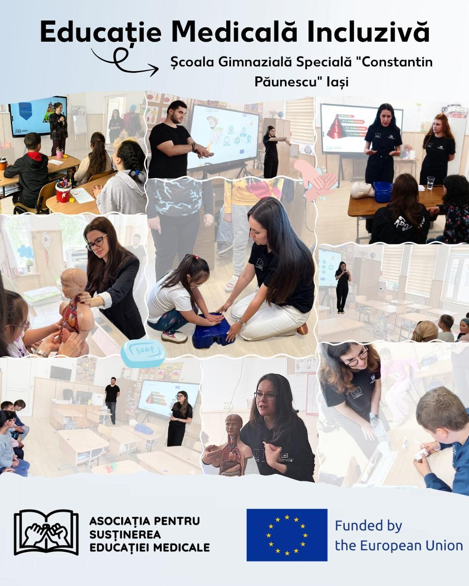
Ateliere adaptate elevilor cu cerințe educaționale speciale
372 elevi · 5 școli
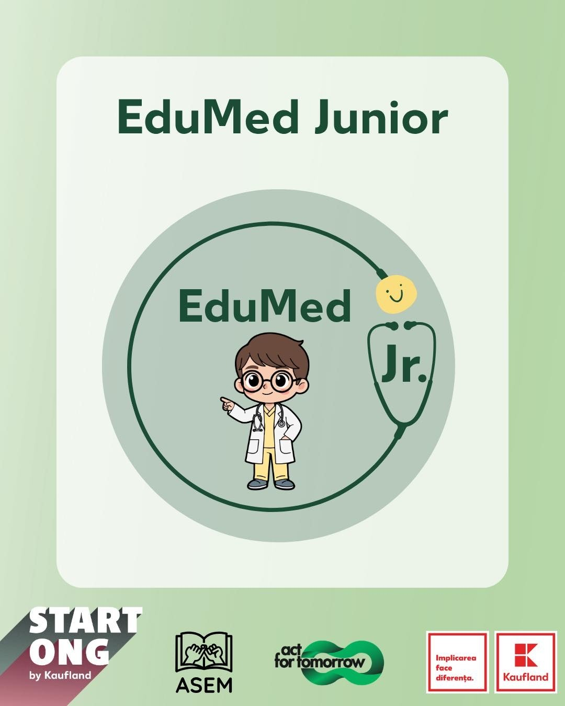
Activități de educație pentru sănătate prin joc, pentru preșcolari
Țintă: 400 copii · 40 ateliere
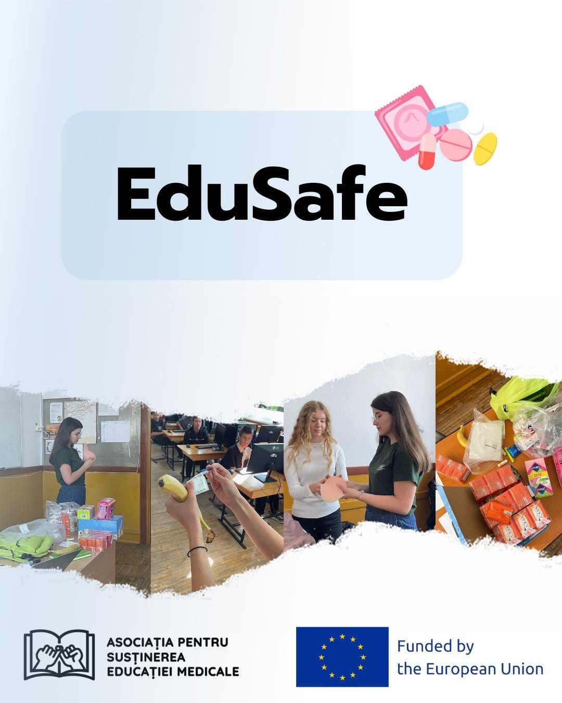
Educație pentru sănătate, relații sănătoase și prevenirea abuzului în rândul tinerilor din Moldova
Țintă: 300 tineri
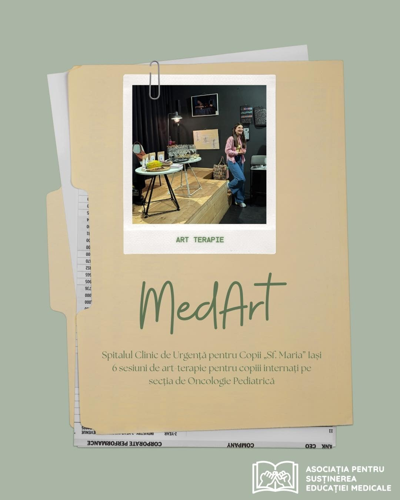
Art-terapie pentru copiii internați la Oncologie Pediatrică, Iași
Sesiune la spital: 31 oct. 2026
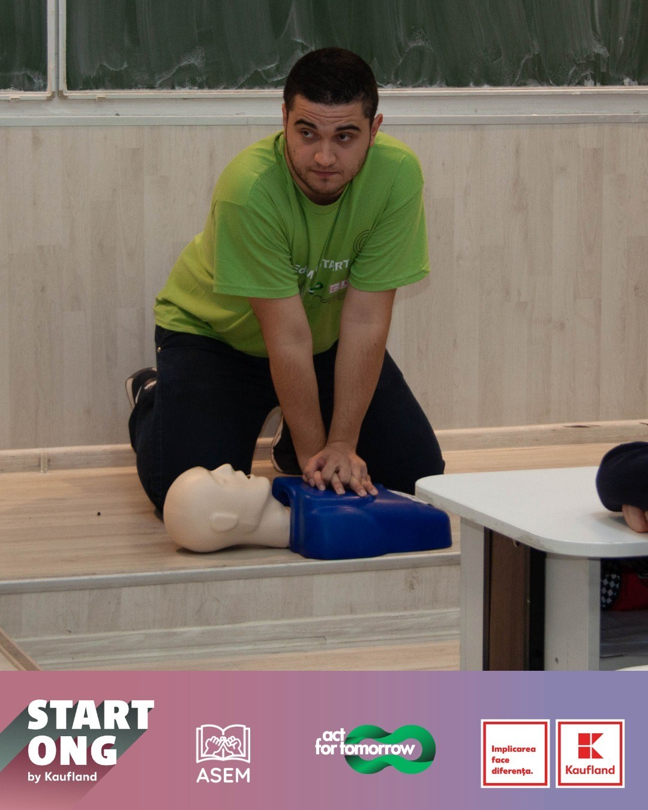
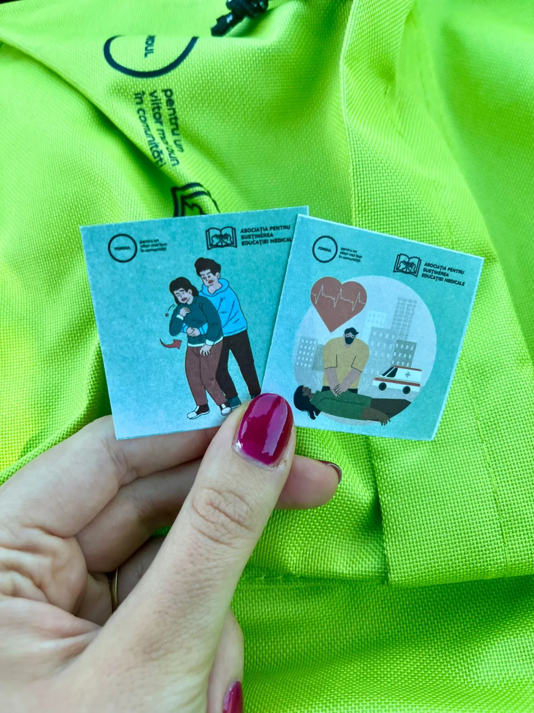
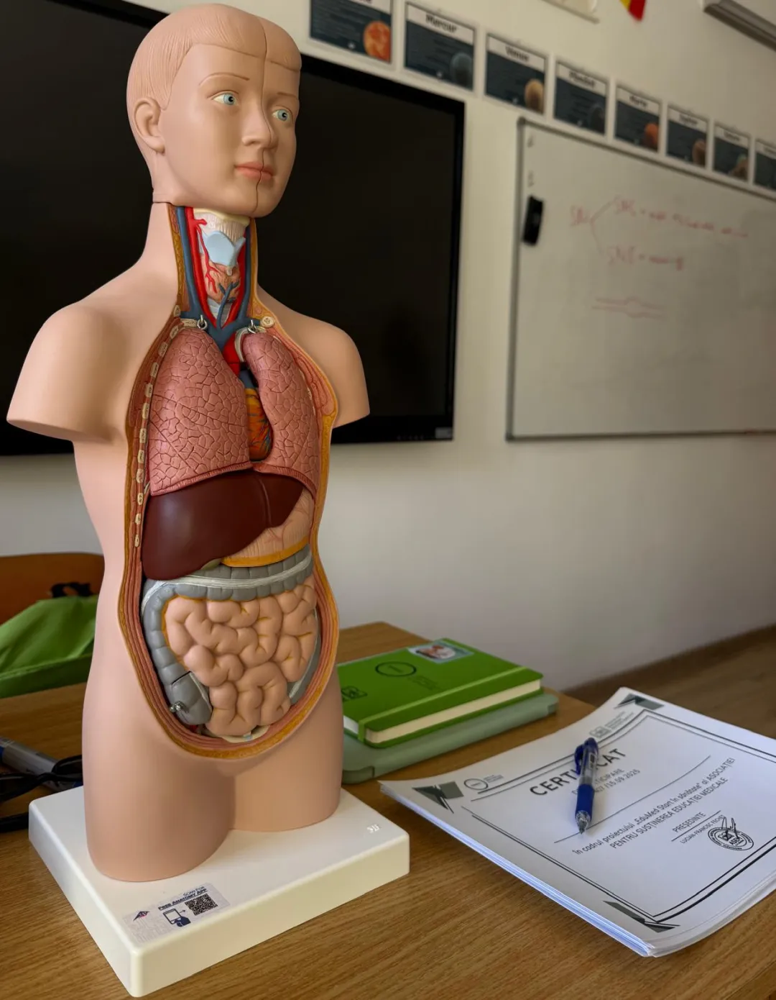
Educație pentru sănătate pentru elevii de gimnaziu
610 beneficiari · 25 activități
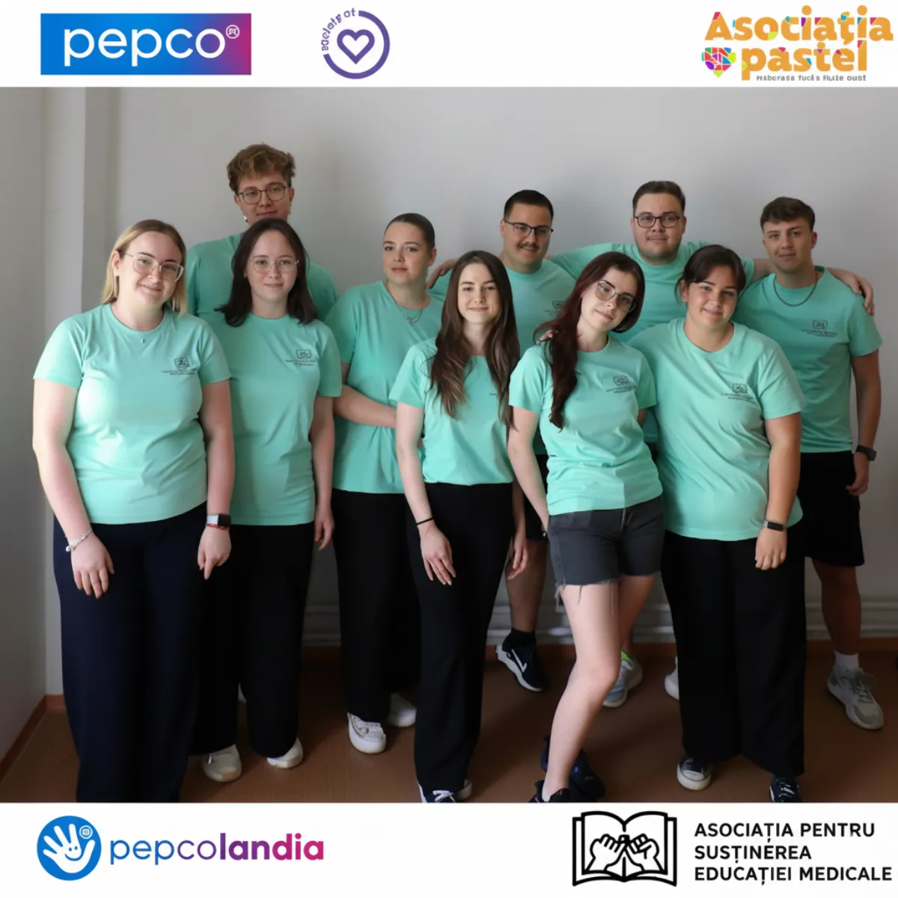
Orientare profesională în domeniul medical pentru liceeni din mediul rural
150 elevi · 3 licee
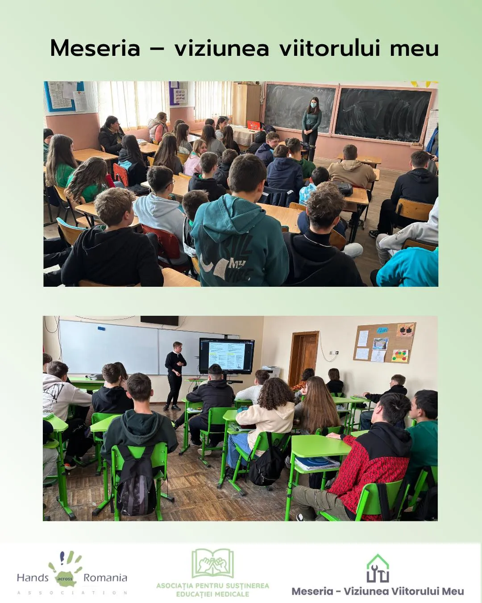
Sesiuni de informare despre învățământul profesional dual, în parteneriat cu Hands Across Romania
1.000+ elevi · 16 școli
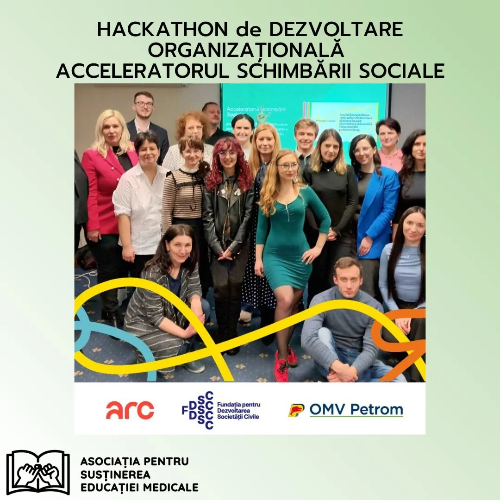
Niciun proiect în această categorie.